Inflator Module Handling and Scrapping
Inflator Module Handling and Scrapping
Live (Undeployed) Inflator Module
Caution: Refer to SIR Inflator Module Handling and Storage Caution (SIR Inflator Module Handling and Storage Caution) .
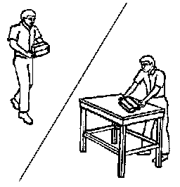
Take special care when handling or storing a live (undeployed) inflator module. An inflator module deployment produces a rapid generation of gas. This may cause the inflator module, or an object in front of the inflator module, to project through the air in the event of an unlikely deployment.
Dual Stage Inflator Module
Dual stage inflator modules have 2 deployment stages. If stage 1 was used to deploy a dual stage inflator module, stage 2 may still be active. Therefore, a deployed dual stage inflator module must be treated as an active module. If disposal of a deployed or undeployed dual stage module is required both deployment loops must be energized to deploy the air bag.
Scrapping Procedure
During the course of a vehicle's useful life, certain situations may arise which will require the disposal of a live (undeployed) inflator module. Do not dispose a live (undeployed) inflator module through normal disposal channels until the inflator module has been deployed. The following information covers the proper procedures for the disposing of a live (undeployed) inflator module.
Do not deploy the inflator module in the following situations:
* After replacement of an inflator module under warranty. The inflator module may need to be returned undeployed to the manufacturer.
* If the vehicle is the subject of a Product Liability report related to the SIR system and is subject to a Preliminary Investigation (GM-1241). Do not alter the SIR system in any manner.
* If the vehicle is involved in a campaign affecting the inflator modules. Follow the instructions in the Campaign Service Bulletin for proper SIR handling procedures.
Deployment Procedures
The inflator module can be deployed inside or outside of the vehicle. The method used depends upon the final disposition of the vehicle. Review the following procedures in order to determine which will work best in a given situation:
Deployment Outside Vehicle (Steering Wheel Module, I/P Module, Roof Rail Module, and Side Impact Module)
Deploy the inflator module outside of the vehicle when the vehicle will be returned to service. Situations that require deployment outside of the vehicle include the following:
* Using the SIR diagnostics, you determine that the inflator module is malfunctioning.
* The inflator module is cosmetically damaged (scratched or ripped).
* The inflator module pigtail (if equipped) is damaged.
* The inflator module connector is damaged.
* The inflator module connector terminals are damaged.
Deployment and disposal of a malfunctioning inflator module is subject to any required retention period.
Caution: Refer to SIR Inflator Module Disposal Caution (SIR Inflator Module Disposal Caution) .
Special Tools
* J 38826 SIR Deployment Harness
* J 39401-B SIR Deployment Fixture
* J 38826-30A Roof rail module adapter
* J 38826-30A Side impact module adapter
* J 38826-75 Steering wheel module adapter (dual stage air bags)
* J 38826-80 I/P module adapter (dual stage air bags)
1. Turn OFF the ignition.
2. Remove the ignition key.
3. Put on safety glasses.
4. Remove the inflator module. Refer to the following:
* If you are removing the steering wheel module, refer to Inflatable Restraint Steering Wheel Module Replacement (Service and Repair) .
* If you are removing the I/P module, refer to Inflatable Restraint Instrument Panel Module Replacement (Service and Repair) .
* If you are removing a side impact module, refer to Inflatable Restraint Side Impact Module Replacement - Front (Service and Repair) .
* If you are removing a roof rail module, Roof Side Rail Inflatable Restraint Module Replacement - Left Side (Service and Repair) and/or Roof Side Rail Inflatable Restraint Module Replacement - Right Side (Service and Repair) .
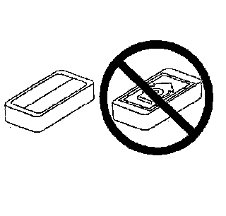
5. Place the inflator module with the vinyl trim cover facing up and away from the surface on a work bench.
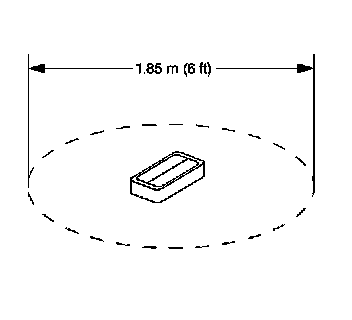
6. Clear a space on the ground about 1.85 m (6 ft) in diameter for deployment of the inflator module or deployment fixture. If possible, use a paved, outdoor location free of activity. Otherwise, use a space free of activity on the shop floor. Make sure you have sufficient ventilation.
7. Make sure no loose or flammable objects are in the area.
Important: Dual stage deployments are only used in steering wheel and I/P inflator modules. If stage 1 was used to deploy a dual stage inflator module, stage 2 may still be active. If disposal of a deployed or undeployed dual stage module is required both deployment loops must be energized to deploy the air bag.
8. If you have a steering wheel inflator module, place the inflator module in the center of the space.
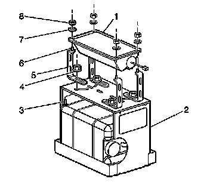
9. If you have an I/P inflator module, the following instructions:
* Place the J 39401-B SIR deployment fixture (2) in the center of the cleared area.
* Fill the deployment fixture with water or sand.
* Using the proper nuts and bolts, mount the I/P module (1) to the deployment fixture (2), with the vinyl trim facing up.
* Securely tighten all fasteners that hold the I/P module (1) to the deployment fixture (2).
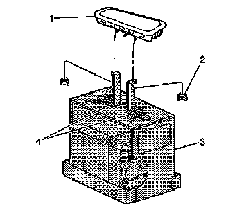
10. If you have a side impact module, the following instructions:
* Place the J 39401-B SIR deployment fixture (3) in the center of the cleared area.
* Fill the deployment fixture with water or sand.
* Using the proper nuts and mount the side impact module (1) to the deployment fixture (3), with the vinyl trim facing up.
* Adjust and secure the fixture arms (4) to the deployment fixture (3).
* Securely tighten all fasteners that hold the side impact module (1) to the deployment fixture (3).
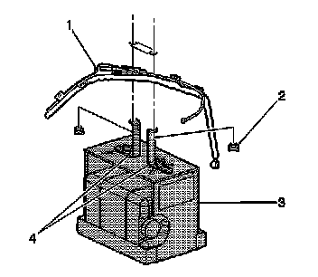
11. If you have a roof rail module, the following instructions:
* Place the J 39401-B SIR deployment fixture (3) in the center of the cleared area.
* Fill the deployment fixture with water or sand.
* Using the proper nuts (2) and mount the roof rail module (1) to the deployment fixture (3), with the vinyl face up.
* Adjust and secure the fixture arms (4) to the deployment fixture (3).
* Securely tighten all fasteners that hold the side impact module (1) to the deployment fixture (3).

12. Inspect the J 38826 and the appropriate pigtail adapter for damage. Replace as needed.
13. Short the 2 SIR deployment harness leads (1) together using one banana plug seated into the other.
Important: Tools Required list for the correct adapter.
14. Connect the appropriate pigtail adapter (2) to the SIR deployment harness (1).
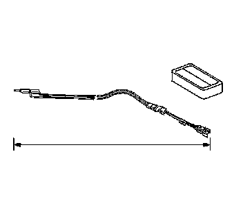
15. Extend the SIR deployment harness and adapter to full length from the deployment fixture.
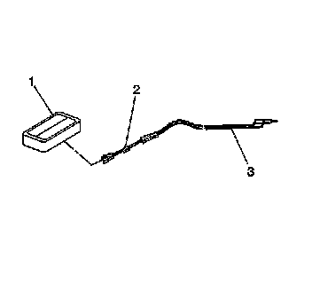
16. Connect the inflator module to the adapter (2) on the SIR deployment harness (1).
17. Place a 12 V minimum/2 A minimum power source (i.e., vehicle battery) near the shorted end of the harness.
Important:
* The rapid expansion of gas involved with deploying an inflator module is very loud. Notify all the people in the immediate area that you intend to deploy the inflator module.
* When the inflator module deploys, the deployment fixture may jump about 30 cm (1 ft) vertically. This is a normal reaction of the inflator module due to the force of the rapid expansion of gas inside the inflator module.
* If you are deploying a dual stage inflator module with stage 1 already deployed, the fixture may not move and the noise may have been reduced.
18. Clear the area of people.

19. Separate the 2 banana plugs on the SIR deployment harness.
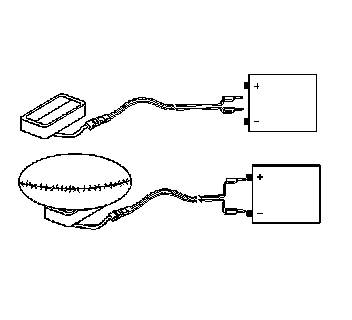
20. Connect the SIR deployment harness wires to the power source. Inflator module deployment will occur when contact is made.

21. Disconnect the SIR deployment harness from the power source after the inflator module deploys.
22. If the inflator module did not deploy, disconnect the adapter and discontinue the procedure. Contact the Technical Assistance Group. Otherwise, proceed to the following steps.
Caution: SIR Deployed Inflator Modules Are Hot Caution (SIR Deployed Inflator Modules Are Hot Caution) .
23. Seat one banana plug into the other in order to short the deployment harness leads.
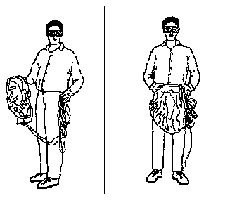
24. Put on a pair of shop gloves.
25. Disconnect the pigtail adapter from the inflator module as soon as possible.
26. Inspect the pigtail adapter and the SIR deployment harness. Replace as needed.
27. Dispose of the deployed inflator module through normal refuse channels.
28. Wash hands with a mild soap.
Deployment Inside Vehicle (Vehicle Scrapping Procedure)
Deploy the inflator modules inside of the vehicle when destroying the vehicle or when salvaging the vehicle for parts. This includes but is not limited to the following situations:
* The vehicle has completed its useful life.
* Irreparable damage occurs to the vehicle in a non-deployment type accident.
* Irreparable damage occurs to the vehicle during a theft.
* The vehicle is being salvaged for parts to be used on a vehicle with a different VIN as opposed to rebuilding as the same VIN.
Caution: SIR Inflatable Module Deployment Outside Vehicle Caution (SIR Inflatable Module Deployment Outside Vehicle Caution) .
1. Turn the ignition switch to the OFF position.
2. Remove the ignition key.
3. Put on safety glasses.
4. Remove all loose objects from the front seats.
5. Disable the SIR system. Refer to SIR Disabling and Enabling (Service and Repair) .
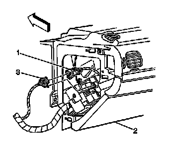
Caution: A deployed dual stage inflator module will look the same whether one or both stages were used. Always assume a deployed dual stage inflator module has an active stage 2. Improper handling or servicing can activate the inflator module and cause personal injury.
6. Disconnect the steering wheel module yellow connector (1) from vehicle harness yellow connector (3).
Important: If vehicle is equipped with dual stage air bags the steering wheel module and I/P module will each have 4 wires. Refer to Component Connector End Views (Connector Views) for determining high and low circuits.
7. Cut the yellow harness connector out of the vehicle, leaving at least 16 cm (6 in) of wire at the connector.
8. Strip 13 mm (0.5 in) of insulation from each of the connector wire leads.
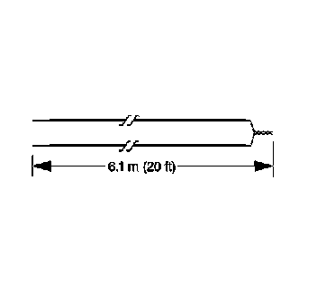
9. Cut two 6.1 m (20 ft) deployment wires from a 0.8 mm (18 gage) or thicker multi-strand wire. Use these wires to fabricate the driver deployment harness.
10. Strip 13 mm (0.5 in) of insulation from both ends of the wires cut in the previous step.
11. Twist together one end from each of the wires in order to short the wires. Deployment wires shall remain shorted, and not connected to a power source until you are ready to deploy the inflator module.
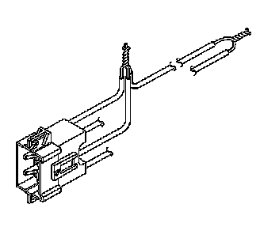
12. Twist together 2 connector wire leads (the high circuits from both stages of the steering wheel module) to one sets of deployment wires. Refer to Component Connector End Views (Connector Views) in order to determine the correct circuits.
13. Inspect that the 3 wire connection is secure.
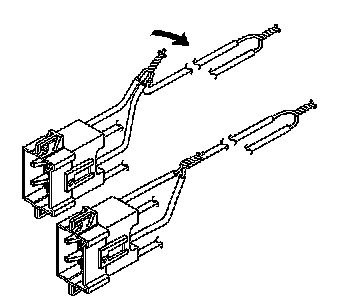
14. Bend flat the twisted connection.
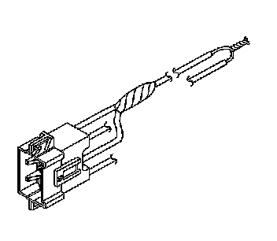
15. Secure and insulate the 3 wire connection to deployment harness using electrical tape.
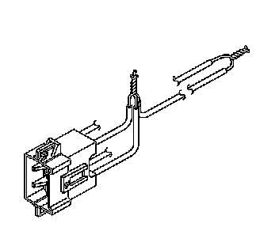
16. Twist together 2 connector wire leads (the low circuits from both stages of the steering wheel module) to one sets of deployment wires. Refer to Component Connector End Views (Connector Views) in order to determine the correct circuits.
17. Inspect that the 3 wire connection is secure.
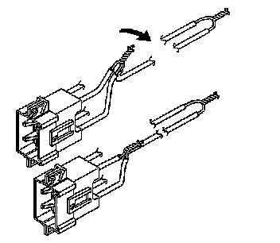
18. Bend flat the twisted connection.
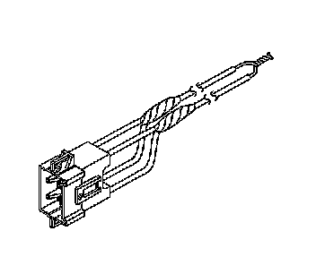
19. Secure and insulate the 3 wire connection to deployment harness using electrical tape.
20. Connect the deployment harness to the steering wheel module in-line connector.
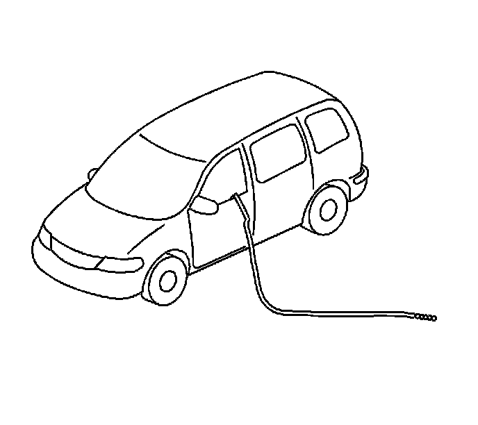
21. Route the deployment harness out of the driver side of the vehicle.
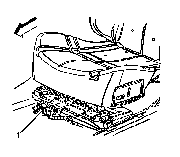
22. Disconnect the driver side air bag/pretensioner yellow connector (1) from the vehicle wiring harness located under the front of driver seat.
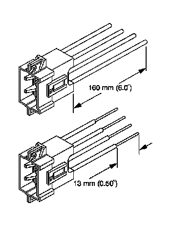
23. Cut the 4 SIR wires (2 for side air bag and 2 for pretensioner) leading to the yellow harness connector from the vehicle, leaving at least 16 cm (6 in) of wire at the connector.
24. Strip 13 mm (0.5 in) of insulation from all 4 SIR wires connector leads (2 for side air bag and 2 for pretensioner).
25. Cut two 6.1 m (20 ft) deployment wires from a 0.8 mm (18 gage) or thicker multi-strand wire. Use these wires to fabricate the deployment harness.
26. Strip 13 mm (0.5 in) of insulation from both ends of the wires cut in the previous step.
27. Twist together one end from each of the wires in order to short the wires. Deployment wires shall remain shorted, and not connected to a power source until you are ready to deploy the side air bag module and pretensioner.
28. Twist together 2 connector wire leads (the high circuits from side air bag and pretensioner ) to one sets of deployment wires. Refer to Component Connector End Views (Connector Views) in order to determine the correct circuits.
29. Inspect that the 3 wire connection is secure.
30. Bend flat the twisted connection.
31. Secure and insulate the 3 wire connection to deployment harness using electrical tape.
32. Twist together 2 connector wire leads (the low circuits from side air bag and pretensioner ) to one sets of deployment wires. Refer to Component Connector End Views (Connector Views) in order to determine the correct circuits.
33. Inspect that the 3 wire connection is secure.
34. Bend flat the twisted connection.
35. Secure and insulate the 3 wire connection to deployment harness using electrical tape.
36. Connect the deployment harness to the driver side air bag/pretensioner yellow connector.
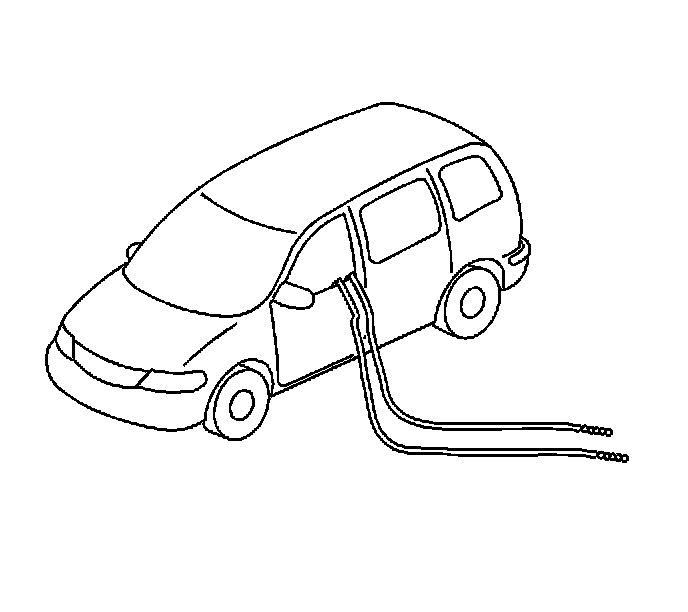
37. Route the deployment harness out of the driver side of the vehicle.
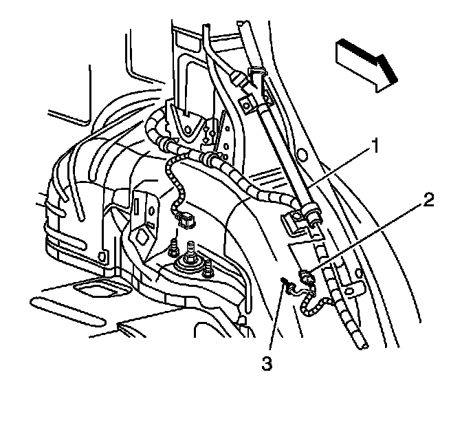
38. Disconnect the vehicle yellow harness connector (2) from the left/driver roof rail module (1).
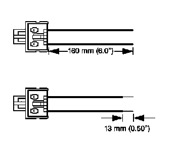
39. Cut the harness connector out of the vehicle, leaving at least 16 cm (6 in) of wire at the connector.
40. Strip 13 mm (0.5 in) of insulation from each of the connector wire leads.
41. Cut two 6.1 m (20 ft) deployment wires from a 0.8 mm (18 gage) or thicker multi-strand wire. These wires will be used to fabricate the roof rail air bag deployment harness.
42. Strip 13 mm (0.5 in) of insulation from both ends of the wires cut in the previous step.
43. Twist together one end from each of the wires in order to short the wires.
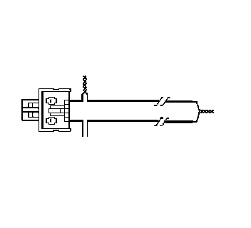
44. Twist together one connector wire lead to one deployment wire.
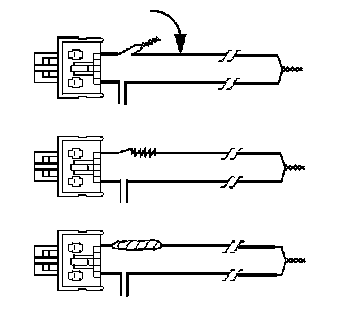
45. Bend flat the twisted connection.
46. Secure and insulate the connection using electrical tape.
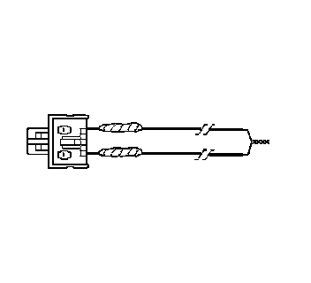
47. Twist together, bend, and tape the remaining connector wire lead to the remaining deployment wire.
48. Connect the deployment harness to the roof rail module yellow connector.
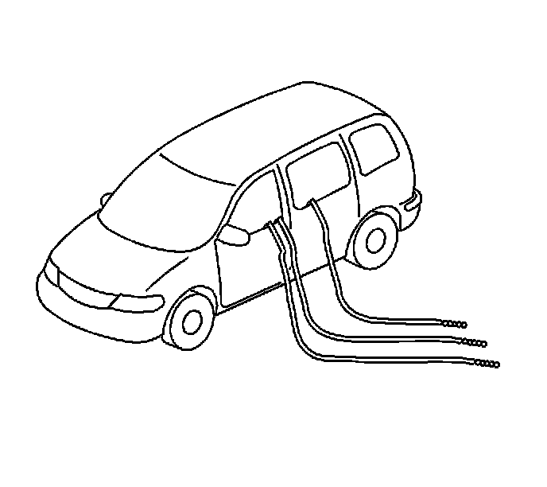
49. Route the deployment harness out of the driver side of the vehicle.
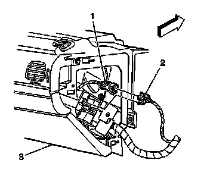
50. Disconnect the I/P module yellow harness connector (1) from the vehicle harness connector (2).
Important: If vehicle is equipped with dual stage air bags the I/P module will each have 4 wires. Refer to Component Connector End Views (Connector Views) for determining high and low circuits.
51. Cut the yellow harness connector out of the vehicle, leaving at least 16 cm (6 in) of wire at the connector.
52. Strip 13 mm (0.5 in) of insulation from each of the connector wire leads.
53. Cut two 6.1 m (20 ft) deployment wires from a 0.8 mm (18 gage) or thicker multi-strand wire. These wires will be used to fabricate the passenger deployment harness.
54. Strip 13 mm (0.5 in) of insulation from both ends of the wires cut in the previous step.
55. Twist together one end from each of the wires in order to short the wires.
56. Twist together 2 connector wire leads (the high circuits from both stages of the I/P module) to one sets of deployment wires. Refer to Component Connector End Views (Connector Views) in order to determine the correct circuits.
57. Inspect that the 3 wire connection is secure.
58. Bend flat the twisted connection.
59. Secure and insulate the 3 wire connection to deployment harness using electrical tape.
60. Twist together 2 connector wire leads (the low circuits from both stages of the I/P module) to one sets of deployment wires. Refer to Component Connector End Views (Connector Views) in order to determine the correct circuits.
61. Inspect that the 3 wire connection is secure.
62. Bend flat the twisted connection.
63. Secure and insulate the 3 wire connection to deployment harness using electrical tape.
64. Connect the deployment harness to the I/P module in-line connector.
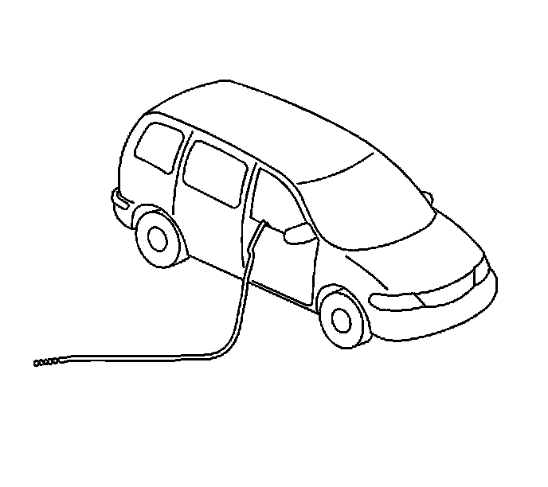
65. Route the deployment harness out of the passenger side of the vehicle.
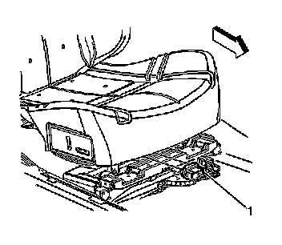
66. Disconnect the passenger side air bag/pretensioner yellow connector (1) from the vehicle wiring harness located under the front of driver seat.
67. Cut the 4 SIR wires (2 for side air bag and 2 for pretensioner) leading to the yellow harness connector from the vehicle, leaving at least 16 cm (6 in) of wire at the connector.
68. Strip 13 mm (0.5 in) of insulation from all 4 SIR wires connector leads (2 for side air bag and 2 for pretensioner).
69. Cut two 6.1 m (20 ft) deployment wires from a 0.8 mm (18 gage) or thicker multi-strand wire. Use these wires to fabricate the deployment harness.
70. Strip 13 mm (0.5 in) of insulation from both ends of the wires cut in the previous step.
71. Twist together one end from each of the wires in order to short the wires. Deployment wires shall remain shorted, and not connected to a power source until you are ready to deploy the side air bag module and pretensioner.
72. Twist together 2 connector wire leads (the high circuits from side air bag and pretensioner) to one sets of deployment wires. Refer to Component Connector End Views (Connector Views) in order to determine the correct circuits.
73. Inspect that the 3 wire connection is secure.
74. Bend flat the twisted connection.
75. Secure and insulate the 3 wire connection to deployment harness using electrical tape.
76. Twist together 2 connector wire leads (the low circuits from side air bag and pretensioner) to one sets of deployment wires. Refer to Component Connector End Views (Connector Views) in order to determine the correct circuits.
77. Inspect that the 3 wire connection is secure.
78. Bend flat the twisted connection.
79. Secure and insulate the 3 wire connection to deployment harness using electrical tape.
80. Connect the deployment harness to the passenger side air bag/pretensioner yellow connector.
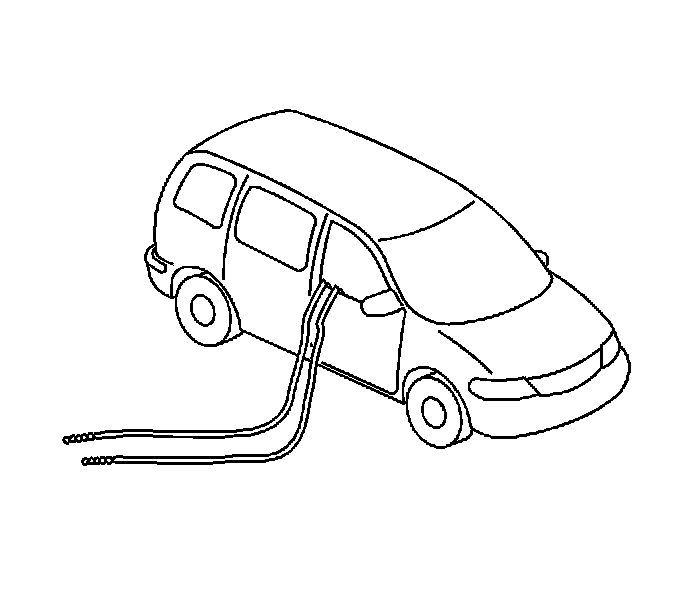
81. Route the deployment harness out of the passenger side of the vehicle.

82. Disconnect the vehicle yellow harness connector (3) from the right/passenger roof rail air bag (1).
83. Cut the harness connector out of the vehicle, leaving at least 16 cm (6 in) of wire at the connector.
84. Strip 13 mm (0.5 in) of insulation from each of the connector wire leads.
85. Cut two 6.1 m (20 ft) deployment wires from a 0.8 mm (18 gage) or thicker multi-strand wire. These wires will be used to fabricate the roof rail air bag deployment harness.
86. Strip 13 mm (0.5 in) of insulation from both ends of the wires cut in the previous step.
87. Twist together one end from each of the wires in order to short the wires.
88. Twist together one connector wire lead to one deployment wire.
89. Bend flat the twisted connection.
90. Secure and insulate the connection using electrical tape.
91. Twist together, bend, and tape the remaining connector wire lead to the remaining deployment wire.
92. Connect the deployment harness to the roof rail module yellow connector.
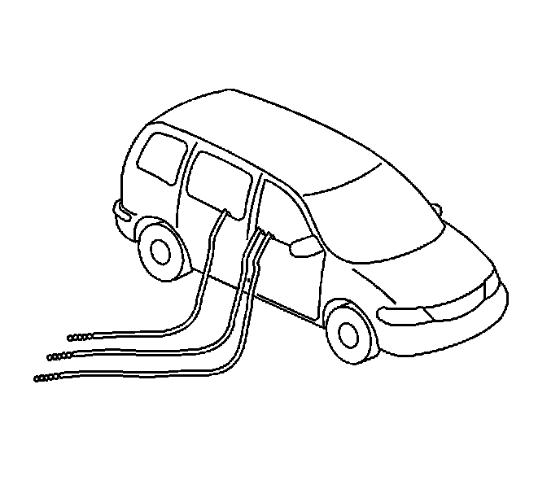
93. Route the deployment harness out of the passenger side of the vehicle.
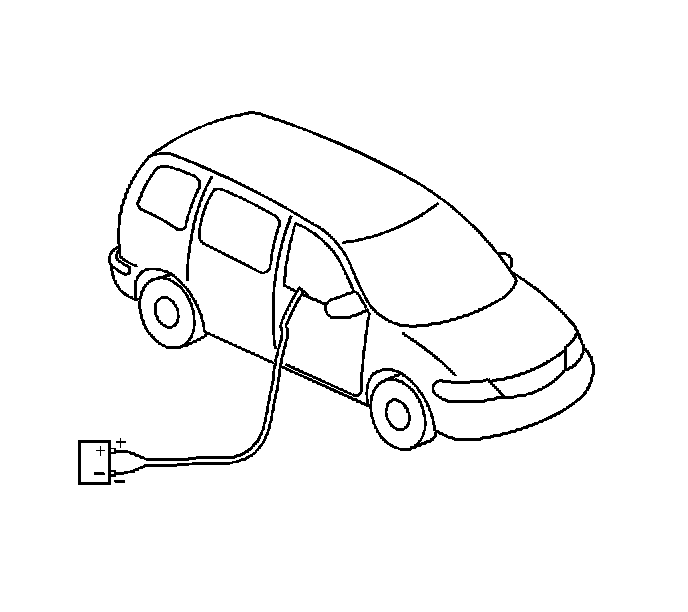
94. Completely cover the windshield and front door window openings with a drop cloth.
95. Stretch out all of the deployment harness wires on the right side of the vehicle to their full length.
96. Deploy each deployment loop one at a time.
97. Place a power source, 12 V minimum/2 A minimum (i.e., a vehicle battery) near the shorted end of the harnesses.
98. Separate the one set of wires and touch the wires ends to the power source in order to deploy the inflator modules, doing one module at a time.
99. Disconnect the deployment harness from the power source and twist the wire ends together.
100. Continue the same process with the remaining deployment harnesses that are available.
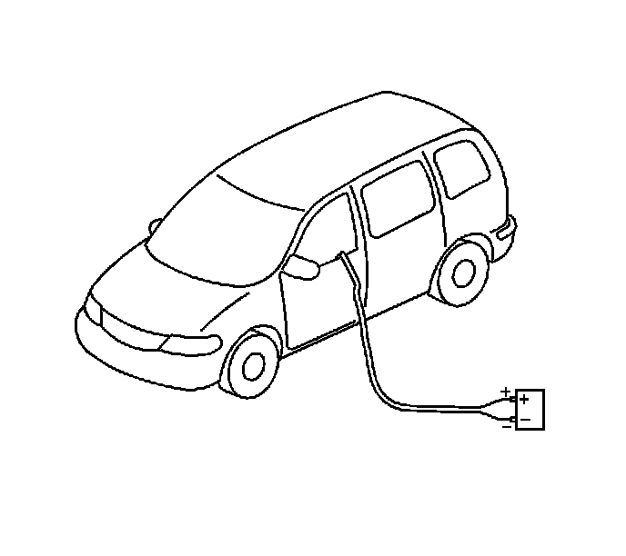
101. Stretch out all of the deployment harness wires on the left side of the vehicle to their full length.
102. Deploy each deployment loop one at a time.
103. Place a power source, 12 V minimum/2 A minimum (i.e., a vehicle battery) near the shorted end of the harnesses.
104. Separate the one set of wires and touch the wires ends to the power source in order to deploy the inflator modules, doing one module at a time.
105. Disconnect the deployment harness from the power source and twist the wire ends together.
106. Continue the same process with the remaining deployment harnesses that are available.
107. Remove the drop cloth from the vehicle.
108. Disconnect all harnesses from the vehicle.
109. Discard the harnesses.
110. Scrap the vehicle in the same manner as a non-SIR equipped vehicle.
111. If one or all of the inflator modules did not deploy, perform the following steps to remove the undeployed module(s) from the vehicle:
* Inflatable Restraint Steering Wheel Module Replacement (Service and Repair)
* Inflatable Restraint Instrument Panel Module Replacement (Service and Repair)
* Inflatable Restraint Side Impact Module Replacement - Front (Service and Repair)
* Roof Side Rail Inflatable Restraint Module Replacement - Left Side (Service and Repair)
* Roof Side Rail Inflatable Restraint Module Replacement - Right Side (Service and Repair)